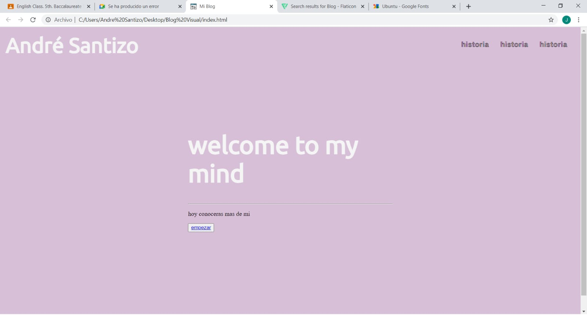

1er Lab
Este fue mi primer blog, en el cual hablé acerca de mi vida, mis gustos personales e intereses
Uso de Display Flex
Este fue mi primer proyecto en el cual aprendí propiedades de flex, me fue de muy buena base para los futuros proyectos
Cafeteria

Este fue mi proyecto más formal, ya que fue en el cual realizamos más cosas y pusimos en funcionamiento lo aprendido en el área de programación y también en el área comercial